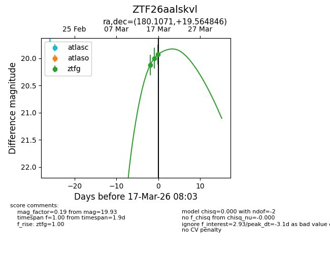
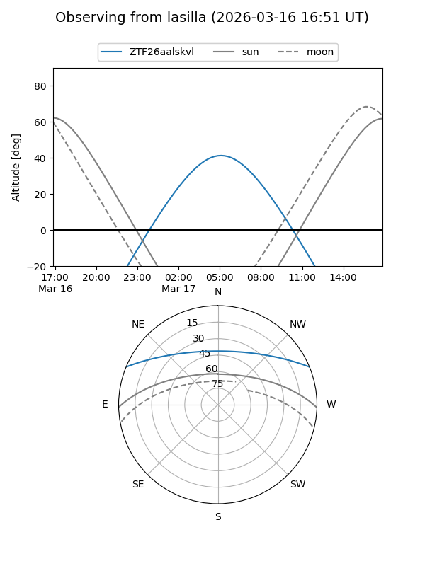
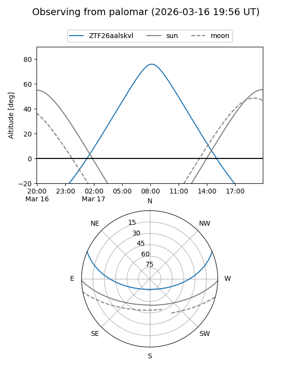
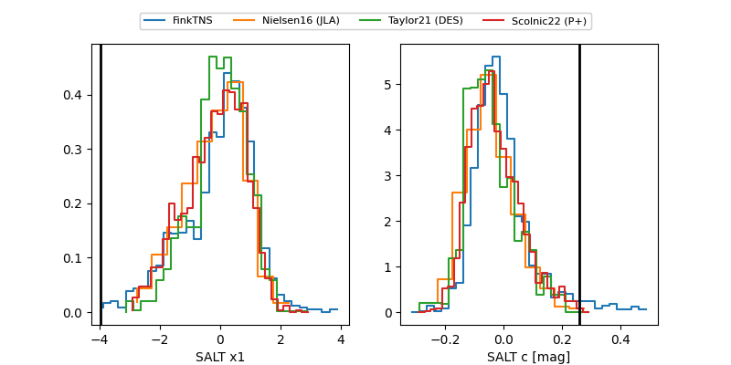

ZTF26aalskvl
Target ZTF26aalskvl at 2026-03-17 08:05
Aliases and brokers:
FINK: link
Lasair: link
ALeRCE: link
alt names
ZTF26aalskvl (ztf,fink_ztf)
Coordinates:
equatorial (ra, dec) = 180.1071,+19.56485
equatorial (HMS+DMS) = 12:00:25.71,+19:33:53.45
galactic (l, b) = (243.1258,+76.07562)
Flags:
Photometry:
last ztfg=19.93
3 ztfg detections
Lightcurve

Visibility


Additional plots
